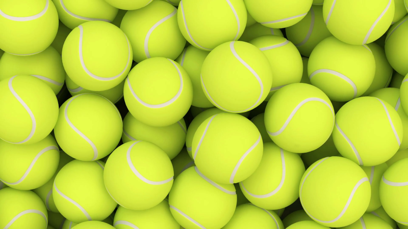

Part of the appeal of tennis stems from the simplicity of equipment required for play. Beginners need only a racket and balls.
The components of a tennis racket include a handle, known as the grip, connected to a neck which joins a roughly elliptical frame that holds a matrix of tightly pulled strings. For the first 100 years of the modern game, rackets were made of wood and of standard size, and strings were of animal gut. Laminated wood construction yielded more strength in rackets used through most of the 20th century until first metal and then composites of carbon graphite, ceramics, and lighter metals such as titanium were introduced. These stronger materials enabled the production of oversized rackets that yielded yet more power. Meanwhile, technology led to the use of synthetic strings that match the feel of gut yet with added durability.
Under modern rules of tennis, the rackets must adhere to the following guidelines.
The rules regarding rackets have changed over time, as material and engineering advances have been made. For example, the maximum length of the frame had been 32 inches (81 cm) until 1997, when it was shortened to 29 inches (74 cm).
Many companies manufacture and distribute tennis rackets. Wilson, Head and Babolat are some of the more commonly used brands; however, many more companies exist.[example needed] The same companies sponsor players to use these rackets in the hopes that the company name will become more well known by the public.
Tennis balls were originally made of cloth strips stitched together with thread and stuffed with feathers. Modern tennis balls are made of hollow vulcanized rubber with a felt coating. Traditionally white, the predominant colour was gradually changed to optic yellow in the latter part of the 20th century to allow for improved visibility. Tennis balls must conform to certain criteria for size, weight, deformation, and bounce to be approved for regulation play. The International Tennis Federation (ITF) defines the official diameter as 65.41–68.58 mm (2.575–2.700 in). Balls must weigh between 56.0 and 59.4 g (1.98 and 2.10 oz). Tennis balls were traditionally manufactured in the United States and Europe. Although the process of producing the balls has remained virtually unchanged for the past 100 years, the majority of manufacturing now takes place in the Far East. The relocation is due to cheaper labour costs and materials in the region.
Advanced players improve their performance through a number of accoutrements. Vibration dampeners may be interlaced in the proximal part of the string array for improved feel. Racket handles may be customized with absorbent or rubber-like materials to improve the players' grip. Players often use sweat bands on their wrists to keep their hands dry and head bands or bandanas to keep the sweat out of their eyes as well. Finally, although the game can be played in a variety of shoes, specialized tennis shoes have wide, flat soles for stability and a built-up front structure to avoid excess wear.